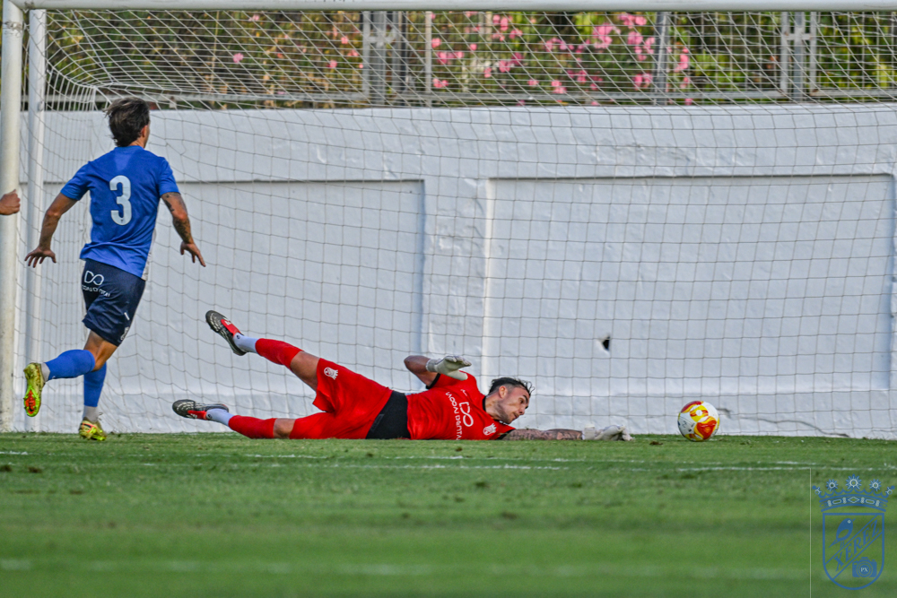
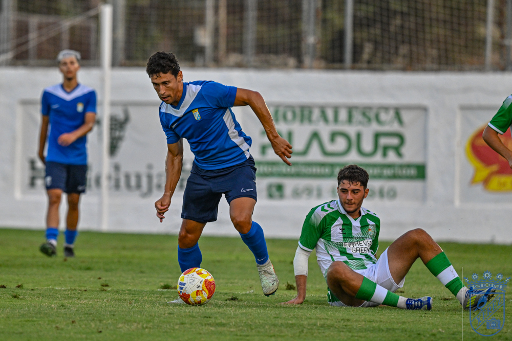

Xerez draw against a superior Betis C

The blue-and-whites post their second consecutive draw, this time 1-1 against Real Betis C, in a match that showed the physical toll of two matches in a few days.
Xerez CD could not break their run of draws. After Friday's 0-0 against Racing Portuense, Xavi Molist's side shared the spoils yesterday, 1-1, against Real Betis C at the Antonio Gallardo stadium in Arcos, in a match in which the blue-and-whites, with fatigue in their legs from the packed schedule, did not look superior to a lower-category rival that nonetheless plays with real fluency after being crowned División de Honor champions and earning promotion to Tercera RFEF with a squad full of technically gifted players. The Xerez side never quite got going, either in the first half, where Jaime Fernández's forays down the right were the main attacking threat, or in the second, after the usual carousel of substitutions, with Molist still to settle on what looks like his first-choice line-up for the league opener.
The Betis affiliate side, coached by former Xerez man Capi, almost took the lead straight from kick-off. After two minutes, a quick transition caught the Xerez back line out of position and the ball reached Kike, whose shot clipped the post; only a good reaction save from Marcos Alconchel prevented the first goal conceded all pre-season. Xerez responded immediately with a good pass from Jaime López to Jaime Fernández, who raced down the wing and, with space to work with, looked for Rubén Mesa with a cross that fell just short. On eleven minutes the green-and-white affiliate side threatened again: a cross from Zequi to the far post, a knockdown from Chacartegui and an overhead effort from Rubén Mesa that flew over the bar.

Photo: PuroXerecismoXerez found it harder than expected to build attacks against the intense pressing of a technically excellent Betis C side, who at times forced the Xerecistas to play the ball backwards for long spells of the first half. A foul on Rubén Mesa on the edge of the area led to a shot from Zequi that Víctor turned away with a fine save, a warning sign for the goal that would follow shortly after. Right before the drinks break, in the 26th minute, a bad mistake playing out from the back by the Betis affiliate let Jaime López through one-on-one with the keeper, and he finished coolly into the right-hand corner to make it 1-0.
The blue-and-white joy did not last long. Betis C levelled six minutes later, in the 32nd minute, after winning the ball back in midfield: Casti set up Juan, who finished calmly and gave Marcos Alconchel no chance, scoring the first goal Xerez CD had conceded all pre-season. Molist's side had a chance to restore their lead two minutes after the equaliser, but Zequi's left-footed effort from a great position went wide, and shortly after Jaime López narrowly failed to connect with a header that skimmed the crossbar. Before half-time, Marcos Alconchel again stepped up to deny the 1-2 with a fine save from a shot by Kamará, in another good move from a Betis C side whose sharpest players were Kike, Casti and Juan.
The affiliate side started the second half the better of the two
The Betis affiliate came out of the break much sharper, with Xerez CD sitting back and struggling to play out under green-and-white pressure. Molist, who had already brought on Salas for Chacartegui, soon introduced Guille Campos for academy player Rubiales, deploying him at full-back. In one of Betis's best chances of the spell, Andrew joined the attack and came close to scoring the 1-2, but his effort, taken with an outstretched leg rather than a cleaner header, flew over the bar.

Photo: PuroXerecismoThe Xerez coach brought on much of the bench for the final half hour, with chances going begging along the way. Straight after coming on, Samu could have scored after another mistake from the Betis keeper, who gifted the ball to Ganfornina; the academy forward, generously, chose to lay it off to his teammate rather than shoot, and Samu missed a one-on-one that had everything in his favour. A minute later an almost identical move played out, this time with the substitute keeper in goal, and on this occasion it was Ganfornina who went for goal, though his effort was too central. In the closing minutes, Fedir produced a fine save from a good cross by Óscar Lorenzo, one of the last warning signs in a match that gradually lost intensity as it wore on.
The match ended in controversy. In the final play, the referee showed a straight red card to Guille Campos for a foul that was, in fact, in Xerez's favour; to avoid the situation escalating further, the referee opted not to let the free kick be taken and blew the final whistle with the score level.
An imprecise Xerez side with heavy legs
Beyond the result, the match in Arcos left the image of an imprecise Xerez CD, with too many misplaced passes and errors in possession that proved costly against a rival who made the most of them. The physical toll was clear to see: this is now two matches in a row, following Friday's 0-0 against Portuense, in which the blue-and-whites have felt heavy legs in the closing stages of pre-season, a logical wear at this stage of preparation but one that has cost the side freshness and clarity as they continue searching for their best form. Xerecista supporters will hope for an improved showing in the next two friendlies, both at Chapín, before the league opener on 6 September.
Match facts
Xerez CD: Marcos Alconchel, Lachica, Chacartegui, Manu Galán, Fali, Isma, Rubén Mesa, Zequi, Jaime López, Jaime Fernández and Sebas Rubiales. Second-half substitutes: Pantoja, Josete, Salas, Raúl López, Mario Peregrina, Moi, Isuskiza, Guille Campos, Óscar Lorenzo, Gabriel, Ganfornina, Dani and Samu.
Betis C: Víctor, Derek, Kamará, Valero, Andrew, Fran, Nano, Kike, Juan R., Castillo and Casti. Substitutes: Fedir, Gonzalo, Cuevas, Torres, Milko, De Haro, Íker, Juanillo, Everson and Farah.
Goals: 1-0 (26') Jaime López. 1-1 (32') Juan.
Referee: Ignacio de Santisteban Adame, assisted by Raúl Romero and Javi Romero, of the Seville committee. Sent off Guille Campos with a straight red card in the final play. Booked Farah and Ganfornina.
Notes: pre-season friendly played at the Antonio Gallardo stadium in Arcos, with the pitch in perfect condition.
🇪🇸 Leer en español ← Back to home